Projects
핵심 프로젝트
비즈니스 전략·정책 대응, 데이터 기반 성과관리·리서치, AI·자동화 세 축으로 정리했습니다. 카드를 클릭하면 상세 내용을 확인할 수 있습니다.
1Strategy & Policy 전략·정책·컴플라이언스
비즈니스 전략 수립과 글로벌 정책·규제 대응
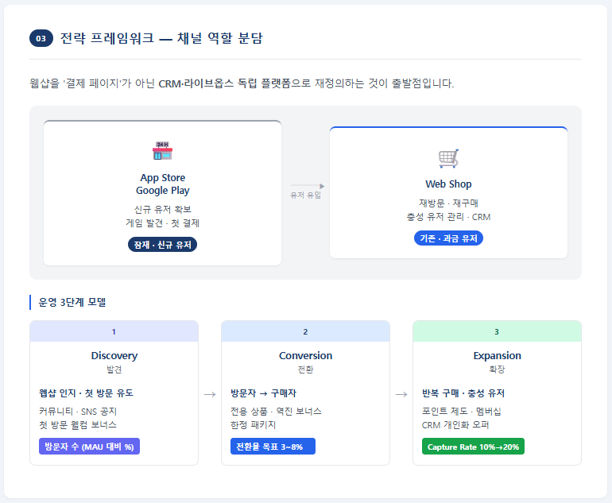
웹샵 글로벌 런칭 및 운영 전략
웹샵 매출 추이와 글로벌 게임사 사례를 분석해, 결제 채널이 아닌 CRM·라이브옵스 채널로 웹샵을 재정의한 운영 전략 프로젝트
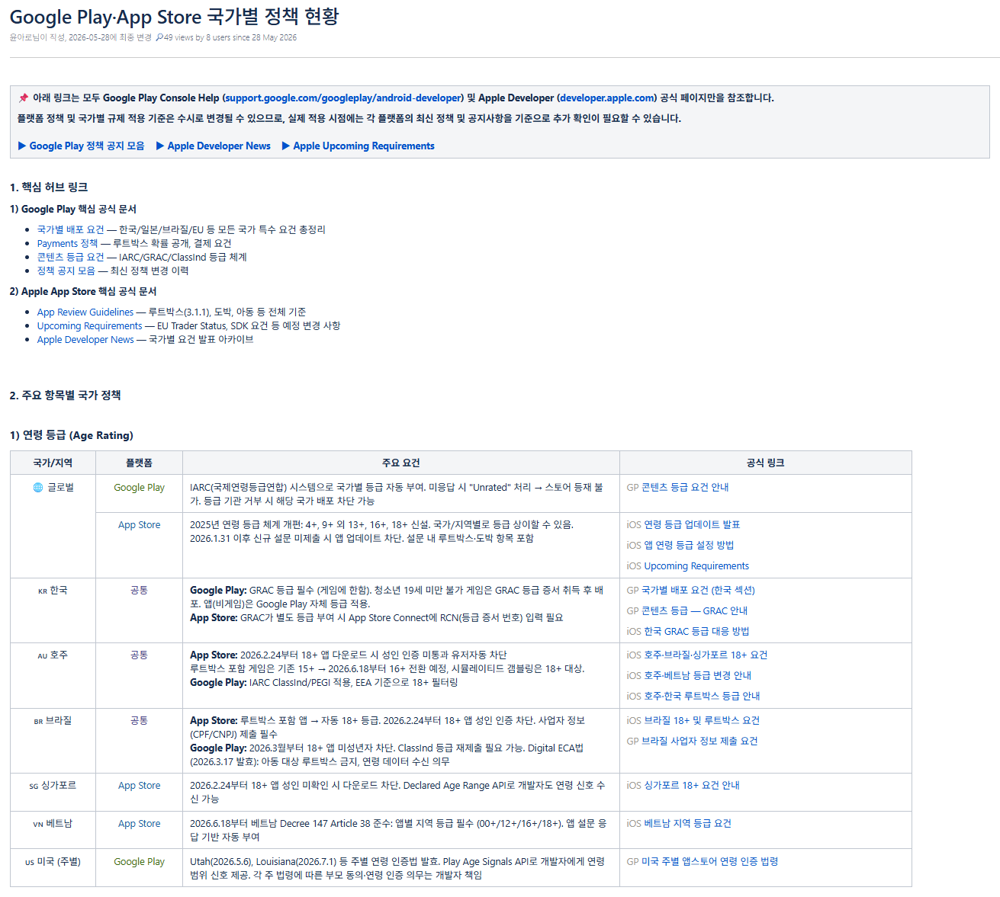
글로벌 Web Shop 정책 및 컴플라이언스 검토
자체 판매(PG)와 MOR 구조의 책임 범위를 비교하고, Google Play·App Store의 국가별 정책·규제를 조사해 대응 기준을 마련한 프로젝트

외부 결제 솔루션 도입 검토
결제수단별 수수료·정산·환불 구조를 비교 분석해, 기능 중심 검토에서 벗어나 운영·비용·리스크를 함께 고려하는 의사결정 구조를 만든 프로젝트
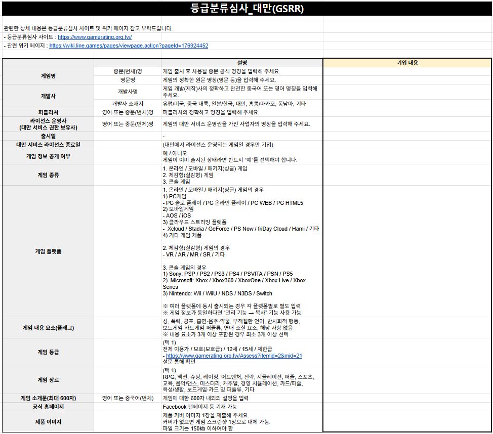
국가별 규제기관·플랫폼 정책 대응
App Store·Google Play 등 플랫폼 정책과 국가별 규제기관 대응 프로세스를 표준화해 등록·검토 리드타임을 줄인 프로젝트
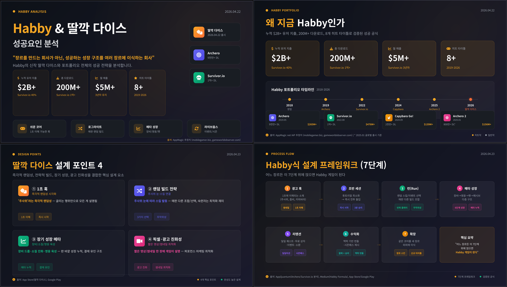
글로벌 기업 포트폴리오·전략 분석
글로벌 경쟁사의 사업 구조·수익화 전략·시장 확장 구조를 분석하여 전략 수립 참고 체계를 구축한 프로젝트
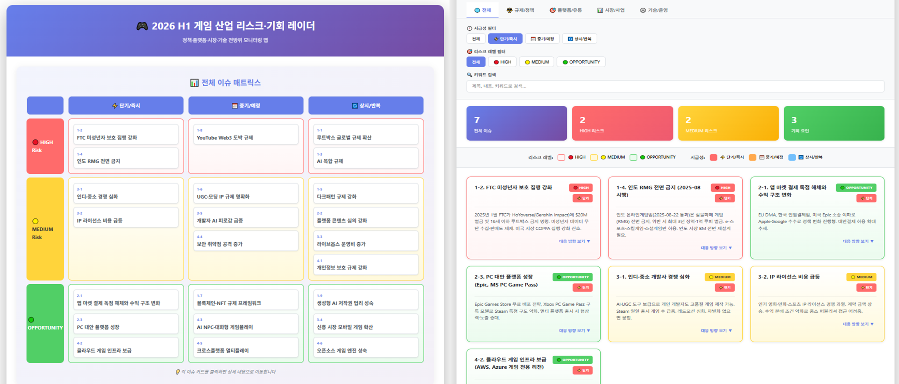
Risk & Opportunity Map 구축
규제·플랫폼 정책·시장 변화·기술 이슈를 통합 분석하여 의사결정에 활용할 수 있는 인사이트 체계를 구축한 프로젝트
2Data & Decision Making 데이터 기반 기획
데이터를 활용한 성과관리 및 의사결정 체계 구축
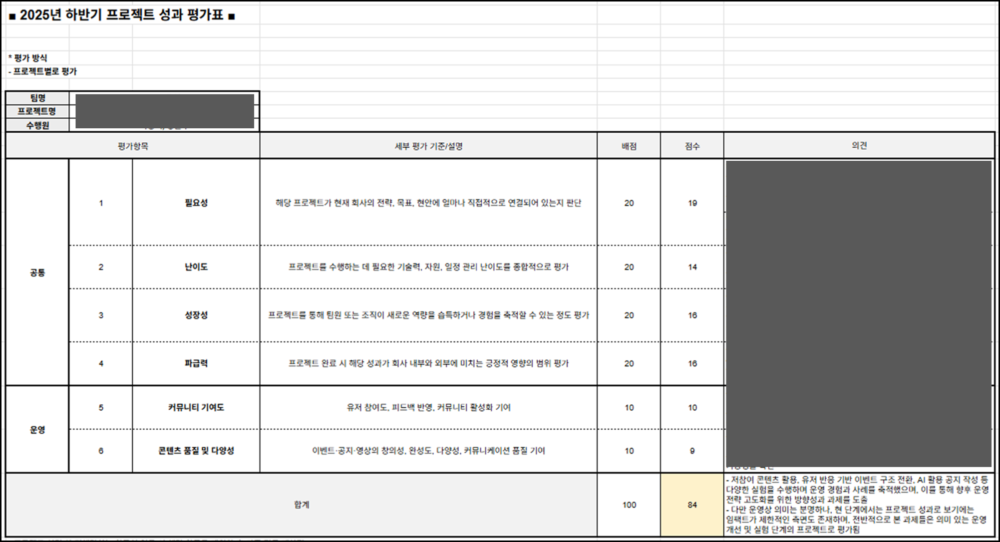
KPI 및 성과 평가 프레임 구축
공통 지표와 실별 특화 지표를 결합한 평가표를 설계해, 59개 프로젝트를 같은 기준으로 채점·비교한 프로젝트
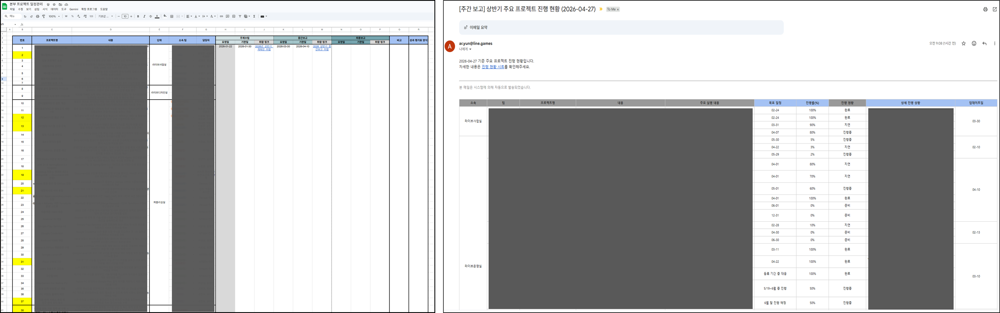
본부 프로젝트 운영 체계 구축
리스크·효율·확장·성과 4가지 유형으로 프로젝트를 분류하는 관리 체계를 세우고, 4개 실·16개 팀·59개 프로젝트의 일정과 진행 현황을 수작업 공유 대신 자동 리포트로 전환한 프로젝트
3AI & Automation AI·업무혁신
생성형 AI와 자동화를 활용한 운영 효율화
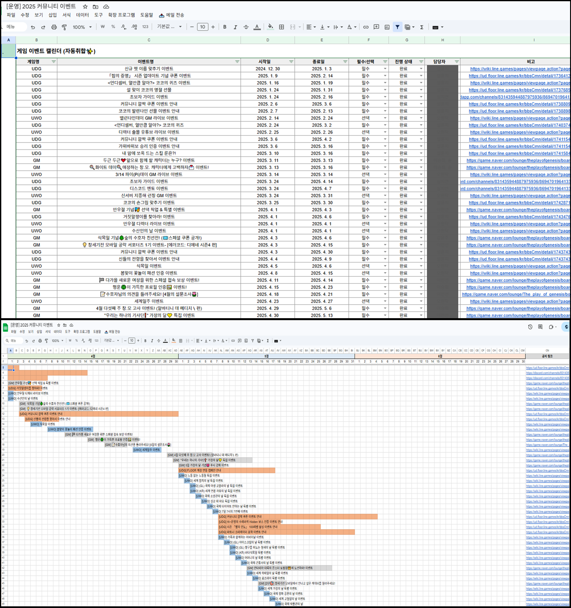
운영 일정 자동화 및 리포팅 시스템
운영 이벤트 일정 취합·시각화·공유를 자동화한 프로젝트 (월 4시간 절감)
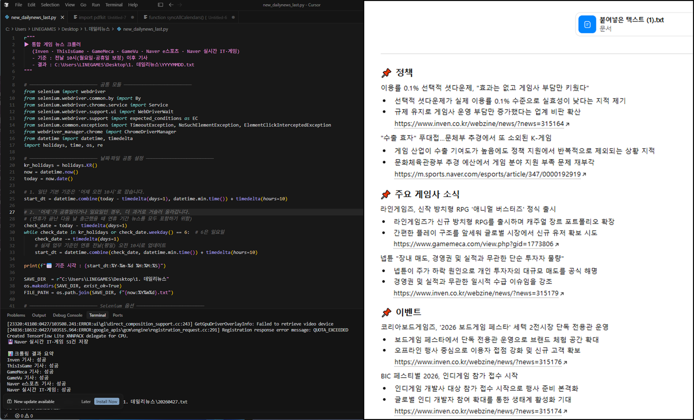
데일리 뉴스 자동 크롤링·AI 요약
뉴스 수집·정리·요약 과정을 자동화해 데일리 뉴스 제작 체계를 구축한 프로젝트 (공수 80% 절감)
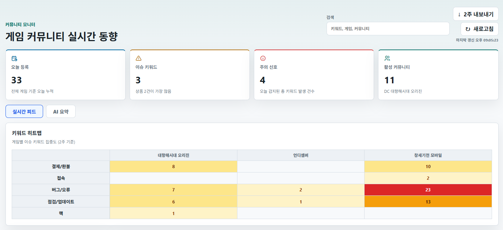
커뮤니티 모니터링 대시보드 구축
다양한 채널의 커뮤니티 이슈를 5분 단위로 자동 수집·시각화해 실시간 감지 체계를 구축한 프로젝트. 운영·사업·QA팀에 배포해 실사용 중
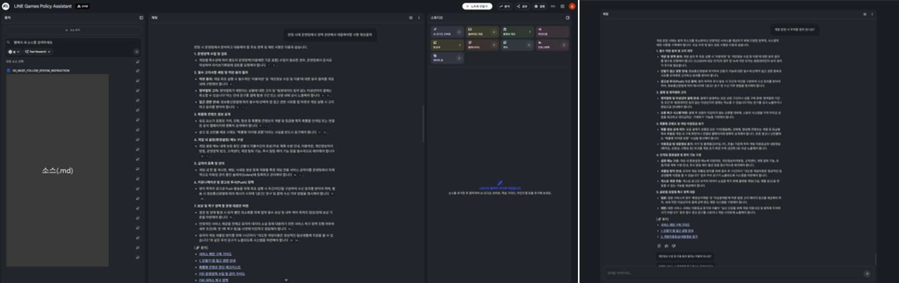
Generative AI 기반 정책 어시스턴트 구축
분산된 정책 문서 60개를 AI 기반 질의응답 구조로 전환한 프로젝트 (답변 소요시간 50분 → 10분)
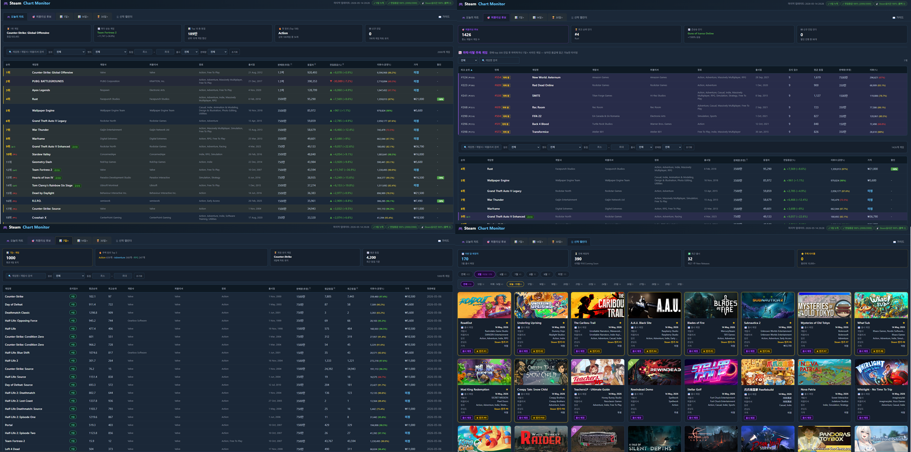
데이터 기반 시장 모니터링 파이프라인 구축
이용량·가격·프로모션 데이터를 일별 자동 수집·적재해, 감에 의존하던 시장 판단을 장기 추세 기반 분석 체계로 전환한 프로젝트
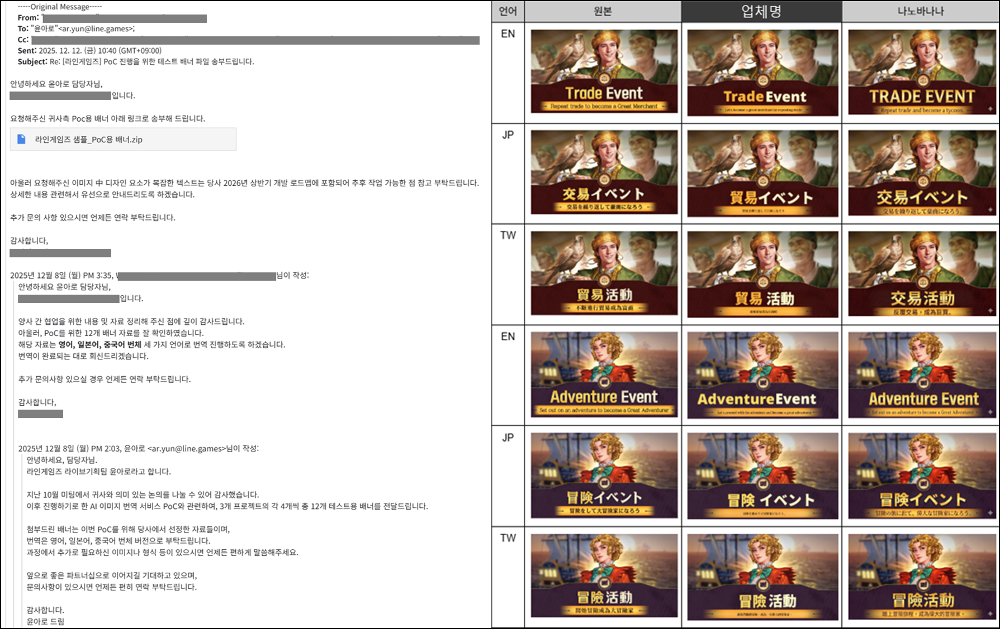
생성형 AI 이미지 솔루션 PoC
원본·외부 업체·AI 생성 결과물을 3개 언어권 기준으로 비교 검증해 솔루션 도입 여부 판단 기준을 만든 프로젝트

이용약관 벤치마킹 모니터링 대시보드 구축
국내 주요 경쟁사 5개사 약관을 3개 언어권 기준으로 비교해 대시보드 기반 추적 구조로 전환한 프로젝트 (검토 시간 3시간 → 20분)
4Operations & Governance 운영·프로세스
서비스 운영 및 글로벌 거버넌스 구축